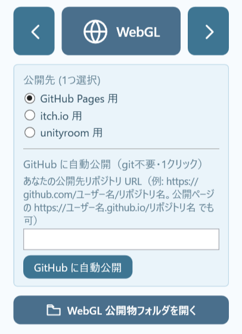

はじめに
Vol.19で、ひとつの物語を、Windows・XZ80・PSP・X68000・MSXという違う機械で、その機械らしく動かす話を書いた。今回は、その「届ける」を、ベクトルの異なる二つの方向へすすめたい。
ひとつは、より深い場所へ。今から40年前に販売されていたMSX向けに、「いま」新規開発を進められている新型VDP「V9968」で、立ち絵をスプライトで組み上げる技の話をしたい。
もうひとつは、より広い場所へ。ゲームエンジン「VN Studio」をWebGLに対応させたことで、制作した作品を普通のブラウザのみで——パソコンでもスマートフォンでも、インストールなしで——すぐ遊べるようになった。
より深く潜ることと、より広く開くこと。今回は、その両方の報告である。
第1章：なぜ、立ち絵を「スプライト」で組むのか
Vol.19で紹介したV9968は、既存の製品ではなく、レトロPCであるMSX向けに、いま現在開発が進められている「新型のVDP」——画面の表示を担うモジュールだ。当時我々が渇望したMSXを今実現するプロジェクトである。あれから、本工房ではその版のVNStudioの開発を少しずつ進めてきた。今回はその経過報告になる。
本題の前に、「スプライト」について少し説明したい。
8bitパソコンの時代、画面に絵を描く処理はとても遅かった。背景を一枚書き換えるだけでも数秒かかることもある。だから、キャラクターがすばやく動くアクション性の高いゲームを、絵をそのつど描き直すやり方だけで作るのは難しかった。
そこで使われたのが、スプライトという専用のハードウェアだ。あらかじめ用意した小さな絵を、背景とは別に、好きな位置へ瞬時に表示できる。背景を描き直さなくても、その小さな絵——スプライト——だけを動かせば、キャラクターがなめらかに動く。当時のアクションゲームの多くは、この仕組みに支えられていた。
ただし、スプライトには大きな制約があった。構造上ひとつのスプライトで同時に使える色数は少なく、画面に同時に出せる枚数にも限りがある。小さなキャラクターを軽やかに動かすためのものだから、大きくて色数の多い絵を映すことは、もともと想定されておらず困難なのだ。
その、本来は小さなキャラクター用のスプライトを、私は立ち絵という大きな一枚絵の表示に使うことにした。少し変わった使い方だ。なぜ、わざわざそうしたのか。
理由は、描画をどうにか改善して、物語への没入感を大切にしたかったからだ。
立ち絵を画面に直接描いていくと、描いている途中の様子が、そのまま画面に見えてしまう。現在のモダンなPCやスマホでは一瞬で終わる処理なので全く問題にならないが、MSXなどのレトロPCでは、上から順にじわじわと絵が現れ、描き終わるまでに秒単位で時間がかかる。ゲームエンジンにおいて、これらの描画のしくみは、プレイヤーがゲームの「物語」を体験する質に直接影響するものであるため、私はどうしてもそれが気になった。
幸いなことに、V9968ではスプライト機能が大きく拡張されており、先に述べた弱点が大きく緩和されている。そこでV9968版では、立ち絵をあらかじめ画面の外側（VRAM）で組み立てておき、必要な時に組み上がったものを表示する「VRAMキャッシュ」方式にした。画面に映らない作業領域で絵（スプライト）を用意し、完成した瞬間にVDPコマンドでスプライトを表示するのだ。描いている最中は原理上見えないため、ちらつきは一切出ない。
この効果が非常に高かったので、先に公開しているV9990版の立ち絵も、色数制約などからスプライトの実装は断念したものの、同様のVRAMキャッシュで画像を表示させるようにした。
第2章：限られた色を、絞り出す
スプライトで立ち絵を組むと決めたとき、正面から向き合うことになったのが、色数の制約だった。
V9968のスプライトは、使える色をいくつかの「組」に分けて持っている。ひとつの組で同時に出せる色数は16色に限られていて、立ち絵全体をひとつの組だけでまかなうことはできない。そこで、こういうやり方をとった。
立ち絵を縦の細い短冊に切り分け、短冊ごとに、いちばん色の合う組を選ぶ。髪のあたりはこの組、肌のあたりはあの組、というように、場所ごとに最適な色の組を割り当てる。それでも色が足りない、特に厳しい短冊だけは、二枚を重ねてさらに色を足す。こうして、乏しいパレットの中に、一枚の立ち絵ぶんの色を、場所ごとにやりくりして収めていく。
小さなキャラクターを動かすためのスプライトを、大きな一枚絵の表現へと転用し、その限られた色数を、短冊単位の工夫で使い切る。性能が足りないから諦めるのではなく、足りない器を、どう使い切るか。そこに、この時代の機械を触る面白さがある。
第3章：V9968のスプライトだからできたこと
V9968には、スプライトの表示の透明度を個別に４段階に設定する機能がある。このおかげで、立ち絵をフェードインでゆっくり浮かび上がるように表示させることが可能だ。これは現在のビジュアルノベルなどでよく使われる表現だが、MSXでもV9968という新VDPのスプライト機能を活用すれば不可能ではなく、実現可能であることを証明できた。
なお、これは開発中のV9968に対応したエミュレータ（openMSX）の上で行っている。以前にXZ80という私のオリジナルマシンの夢Vol.7で夢のマシンを語ったとき、その先にFPGAによる実機化という未来を置いた。今回のMSX+V9968というモデルは私のそのビジョンにとても近い。今後もV9968の開発を見守りながら、私もXZ80という夢のマシンを形にする道を、一歩一歩歩み続けていきたいと考えている。
第4章：そして、いちばん広い場所——ブラウザへ
ここからは、いちばん広い場所の話に移りたい。
VN Studioが、WebGLに対応した。作品を、ブラウザで遊べる形に書き出せるようになった（公開版 0.93.1-beta）。プレイヤーは、Unityのような特別なソフトを入れる必要はない。もはやWindowsもインストールも不要だ。手持ちのスマホやタブレットで、ブラウザでそのページを開けば、すぐに物語が始まる。
また、スマホ・タブレット用に、タッチ操作への対応もした。画面をタップすれば会話が進み、少し長押しすればメニューが開く。指先だけで物語を読み進められるようになった。
さらに、GitHub Pagesへのワンクリック公開を追加した。制作者は、作品を公開したい場所のアドレスを入れてボタンを押すだけで、自分のページに作品が上がる。これまで、ブラウザ版を世に出すには、ファイルを書き出し、指定される場所に書式を合わせて、いずれかにアップロードする、という手間がいくつもあった。その段取りを、ボタンひとつにまとめることができた。作る人が、機械の都合に振り回されない——公開の手続きで立ち止まらずに済むように——という、VNStudioがずっとこだわってきた考え方を、ここでも広げたつもりだ。

なお、この新機能を使って、工房の「キョウカちゃんの新婚さんいらっしゃい！」の体験版を、このブラウザ版として公開してみた。これからはパソコンだけでなく、iPhoneやiPadのブラウザでも、インストールなしでそのまま遊べる。
まだ現在はできないこともある。ブラウザ上でのセーブ・ロードや、動画（webm）を使った背景は表示されない。そういった課題もあることはお伝えしておきたい。
おわりに：奥へも、広くへも
同じひとつの作品を、開発中の夢のVDPというより奥の機械にも届けたい、スマホやタブレットでも開けるというより広い場所にも届けたい。深く潜ることと、広く開くこと。そのどちらも、Vol.19で書いた「共通の魂と、固有のボディ」——物語を変えずに、その場所らしい姿で立ち上げる——は一貫している。
機械の都合でもなく、技術の新しさを誇るためでもなく、まず届けたい体験があって、仕組みはそのあとにある。スプライトで立ち絵を組むのも、ブラウザで遊べるようにするのも、「あなたの物語」を、できるだけ多くの場所で、できるだけその場所らしく立ち上げるための、手段のひとつだ。
奥へも、広くへも。その両方を、これからも少しずつ進めていきたい。